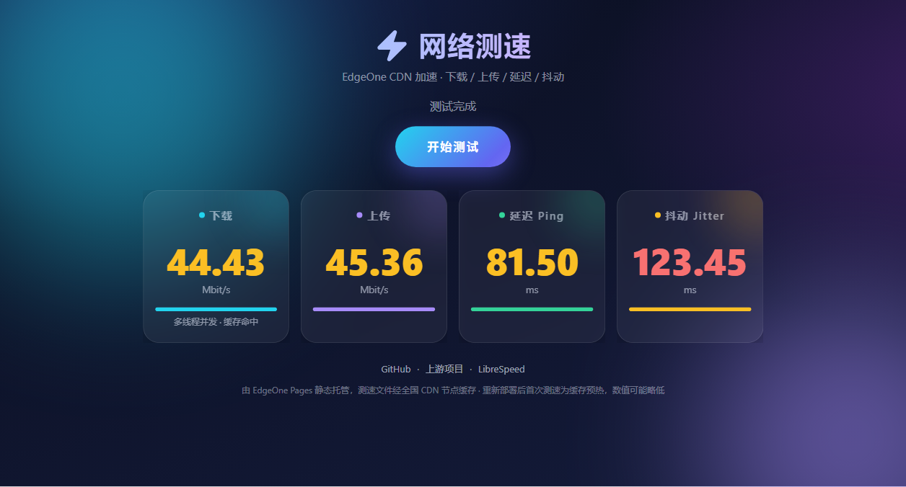

测试README.md中引用的图片
当前README.md引用：

图片预览：
使用绝对路径 /assets/screenshot.png：

文件信息：
- 文件路径: assets/screenshot.png
- 文件大小: 516 KB
- 在GitHub上的URL: https://github.com/Riku1998/eo-speedtest/blob/main/assets/screenshot.png
- RAW URL: https://raw.githubusercontent.com/Riku1998/eo-speedtest/main/assets/screenshot.png
测试不同路径：
1. 相对路径 assets/screenshot.png：

2. GitHub RAW URL：